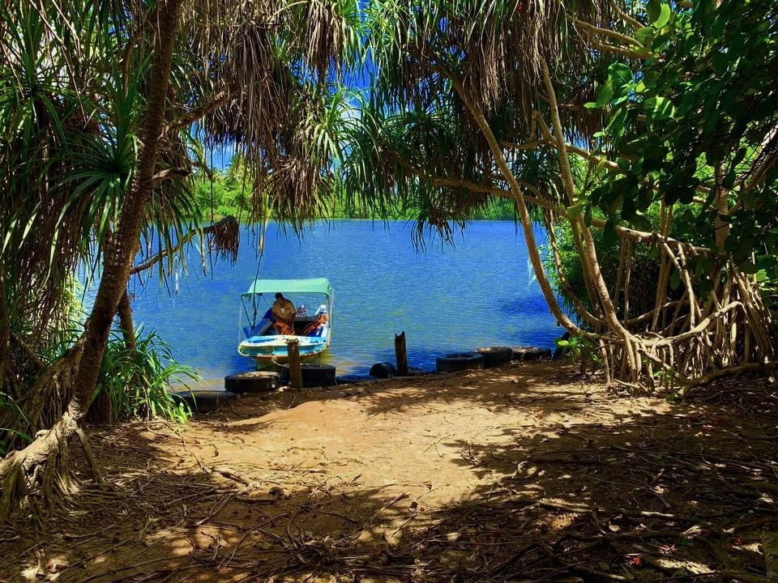

Madolduwa

Madolduwa is a small yet enchanting island located in the Madu River estuary, near Galle in Sri Lanka. Situated amidst lush greenery
and serene waters, Madolduwa offers a peaceful escape from the bustling city life. The island is home to a close-knit community that
relies on fishing and agriculture for their livelihoods.
The history of Madolduwa dates back centuries, with evidence of human settlements and ancient cultural practices found in the area. The island has been inhabited for generations, with the local community preserving their traditions and way of life. Visitors to Madolduwa can immerse themselves in the island's rich cultural heritage, exploring traditional fishing methods, engaging with the friendly locals, and savoring delicious seafood cuisine.
The value of Madolduwa lies in its natural beauty and the opportunity it provides to experience a slower pace of life. Travelers can take a boat ride through the meandering Madu River, surrounded by mangrove forests and abundant wildlife. The island is also known for its cinnamon cultivation, and visitors can witness the process of harvesting and processing cinnamon, gaining insights into an age-old industry.
Madolduwa offers a unique glimpse into rural Sri Lankan life and provides an escape into nature's embrace. It is a place to unwind, reconnect with nature, and appreciate the simplicity and authenticity of a traditional way of life. The island's charm lies in its untouched beauty and the warm hospitality of its residents, making it a hidden gem for those seeking a tranquil and immersive cultural experience.
The history of Madolduwa dates back centuries, with evidence of human settlements and ancient cultural practices found in the area. The island has been inhabited for generations, with the local community preserving their traditions and way of life. Visitors to Madolduwa can immerse themselves in the island's rich cultural heritage, exploring traditional fishing methods, engaging with the friendly locals, and savoring delicious seafood cuisine.
The value of Madolduwa lies in its natural beauty and the opportunity it provides to experience a slower pace of life. Travelers can take a boat ride through the meandering Madu River, surrounded by mangrove forests and abundant wildlife. The island is also known for its cinnamon cultivation, and visitors can witness the process of harvesting and processing cinnamon, gaining insights into an age-old industry.
Madolduwa offers a unique glimpse into rural Sri Lankan life and provides an escape into nature's embrace. It is a place to unwind, reconnect with nature, and appreciate the simplicity and authenticity of a traditional way of life. The island's charm lies in its untouched beauty and the warm hospitality of its residents, making it a hidden gem for those seeking a tranquil and immersive cultural experience.